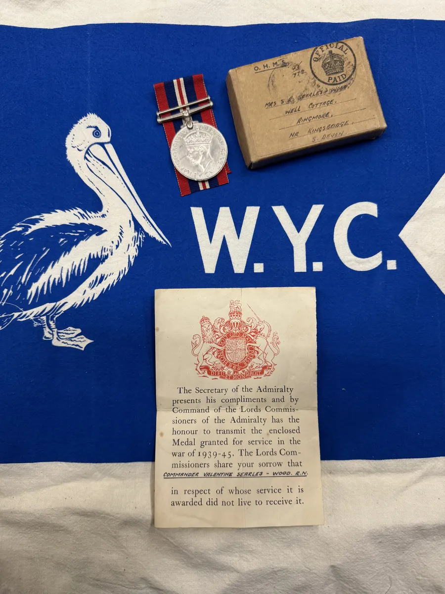
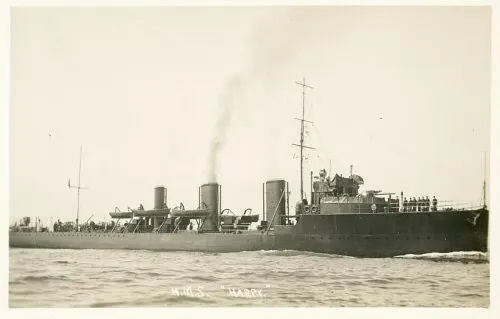
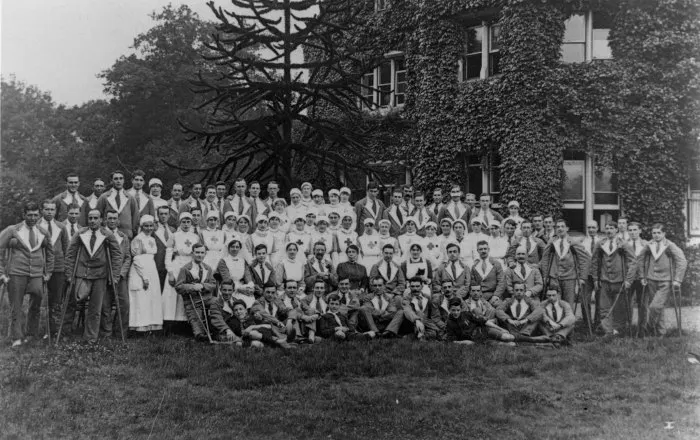
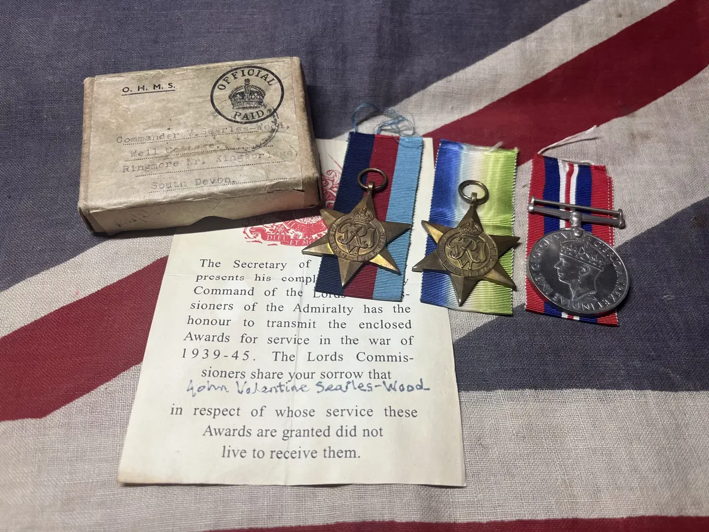
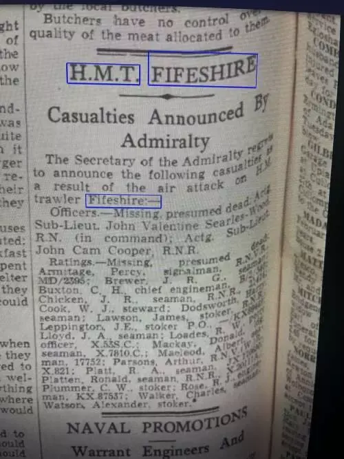
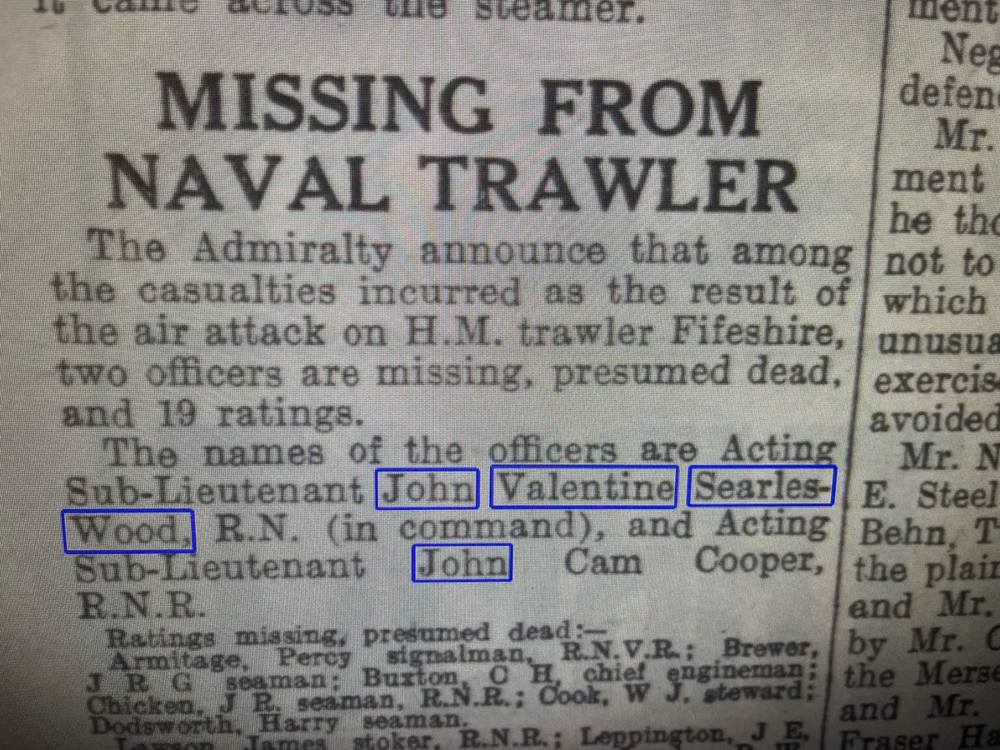

Valentine Searles-Wood (1892–1943)
Valentine was born Valentine Appleton on 23 June 1892 to Herbert Duncan Searles-Wood and Bessie Tooke. His father, a respected architect and Fellow of the Royal Institute of British Architects (FRIBA), adopted the name Searles-Wood upon marrying Bessie, the adopted daughter of solicitor and geologist Searles Valentine Wood. The family resided in Sutton before moving to Christchurch Park, where Herbert designed many notable homes.
Valentine pursued a naval career and was commissioned into the Royal Navy before the outbreak of the First World War. He served with distinction and commanded HMS Harpy as of 5 November 1918. His skills and leadership earned him promotion to Lieutenant Commander on 15 April 1923. He continued his service through peacetime before being placed on the retired list with the honorary rank of Commander on 20 August 1935.
With the advent of the Second World War, he was recalled to active duty. He initially took command of a group of 25 anti-submarine trawlers from 12 to 23 October 1939. Soon after, he was posted to the armed yacht St Modwen, continuing his critical wartime service. He reverted to the retired list on 13 February 1940, concluding a long and decorated naval career. His death was registered at Blandford Forum in April 1943.
Valentine was posthumously awarded the British War Medal for his WWII service. The medal was un-named as issued and arrived with an OHMS forwarding box addressed to his wife in Devon. The accompanying Admiralty casualty slip was marked: "COMMANDER VALENTINE SEARLES-WOOD R.N".
Naval Service Timeline
| Date | Rank/Role | Details |
|---|---|---|
| Pre-1918 | Lieutenant, RN | Service in WWI |
| 5 Nov 1918 | Commander | Commanded HMS Harpy |
| 15 Apr 1923 | Lieutenant Commander | Promotion confirmed |
| 20 Aug 1935 | Commander (Retired) | Placed on retired list |
| 12–23 Oct 1939 | Commander | Commanded 25 anti-sub trawlers |
| Late 1939 | Commander | Assigned to armed yacht St Modwen |
| 13 Feb 1940 | Commander | Returned to retired list |
| Apr 1943 | — | Death recorded in Dorset |


Sibyl Read Searles-Wood (1893–1970)
Sibyl Read was born in Surbiton in April 1893. By the 1911 Census, her family had moved to Grange Road in Sutton, Surrey. From this residence, she volunteered to serve at Benfleet Hall Hospital, also known as Sutton Red Cross Hospital, during the First World War.
She enrolled as a General Service Volunteer from 1916 to 1917, working at the hospital which was established at Benfleet Hall, a private residence loaned rent-free to the Red Cross by William Knibb Appleton, Sibyl’s future husband’s uncle.
The hospital was formally active from 10 June 1915 to 10 April 1919, and during its peak in October 1918, it housed 24 General Service staff. These volunteers—such as Sibyl—were vital to the day-to-day operations. They assisted with dispensing, clerical work, storekeeping, and relieving the burden on nursing staff. General Service staff were formally recognised from September 1915, and although many worked part-time, their contribution was essential to the smooth functioning of the hospital.
Sibyl’s record in the hospital archives identifies her as “now Mrs Searles-Wood”, a notation confirming her later marriage on 25 February 1919 to Valentine Searles-Wood, then a serving Lieutenant in the Royal Navy. This link between two families—Appleton and Read—rooted in the wartime experiences at Benfleet Hall is one of historic significance, tying together service, sacrifice, and community support.
Contextualising Benfleet Hall Hospital
Benfleet Hall’s hospital conversion was part of a broader mobilisation of British civilian infrastructure during the war. The volunteer staff worked alongside trained nurses, masseuses from the King George Hospital in Waterloo, pharmacists, ward sisters, and domestic workers. It was an environment governed by structure and duty. The Chairman of the hospital committee was Sir Ralph Collingwood Forster, with William Knibb Appleton—Sibyl’s future uncle-in-law—among its senior civic patrons.

The social profile of Benfleet Hall volunteers varied greatly. Many came from well-established families, and a large number served only for short periods or part-time. That Sibyl served over multiple years indicates a deeper level of commitment and reliability.
Personal Footnote
Sibyl’s life at the hospital would have been surrounded by both compassion and the emotional strain of caring for the wounded. Her wartime experience exemplifies the role of women who served with quiet perseverance behind the front lines. After marrying Valentine, Sibyl relocated to Hampshire, where they raised their son John. She passed away in 1970, having lived through both World Wars and the personal loss of her son during the Second.
Lieutenant John Valentine Searles-Wood (1919–1940)
John Valentine Searles-Wood was born in 1919 in Epsom, Surrey. Raised in a family deeply steeped in naval and civic tradition, John followed in his father's footsteps and pursued a career in the Royal Navy. He was commissioned as a Sub-Lieutenant and assigned to the Royal Naval Patrol Service during the Second World War.
In the summer of 1940, from 4 June to 8 August, John served aboard HMS Vimiera at Ramsgate. This posting coincided with the operations of H.M. vessel Gerfalcon. Later, he was given command of HMT (His Majesty’s Trawler) Fifeshire, a naval trawler used for coastal defence duties and anti-submarine patrols.
Tragically, in February 1940, HMT Fifeshire was attacked by German Heinkel bombers off the coast of Copinsay Island and was lost with all hands.
The trawler was bombed by two He 111's which hit the Fifeshire twice in the first pass. Sailing in company with the fully armed HMT Ayrshire, Fifeshire had only two Lewis guns to defend herself as she was awaiting her 4" gun to be fitted.
John, just 20 years old at the time, was killed in action. His name is inscribed on the Lowestoft Naval Memorial, and his service and sacrifice are honoured by the Commonwealth War Graves Commission.
He was posthumously awarded the 1939–45 Star, the Atlantic Star, and the War Medal. These medals were delivered in wax packets within a transmittal box addressed to his father, Commander V. Searles-Wood, at Well Cottage, Ringmore, Devon, along with an official Admiralty casualty slip.
Naval Service Timeline
| Date | Rank/Role | Details |
|---|---|---|
| 1939 | Naval Cadet | Commenced officer training |
| 1940 | Sub-Lieutenant | Commissioned Royal Navy |
| Jun–Aug 1940 | Watch Officer | HMS Vimiera stationed at Ramsgate |
| Feb 1940 | Commanding Officer | HMT Fifeshire patrol duties |
| Feb 1940 | Killed in Action | Lost with all hands during enemy bombing |



Legacy and Presentation of Medals
On Good Friday, 18th April 2025, following the successful relaunch of Gerfalcon into the water after her restoration earlier that week on the 16th, Steve Hurrell—the previous owner of the vessel—kindly presented Commander Valentine Searles-Wood’s British War Medal to Gary Fletcher. In a remarkable continuation of this historic thread, Gary later discovered the war medals of John Valentine Searles-Wood.
These treasured medals will now remain aboard Gerfalcon, preserving a powerful piece of naval heritage and honouring the service and sacrifice of both father and son. The vessel, reborn through restoration, now also serves as a floating tribute to their memory.